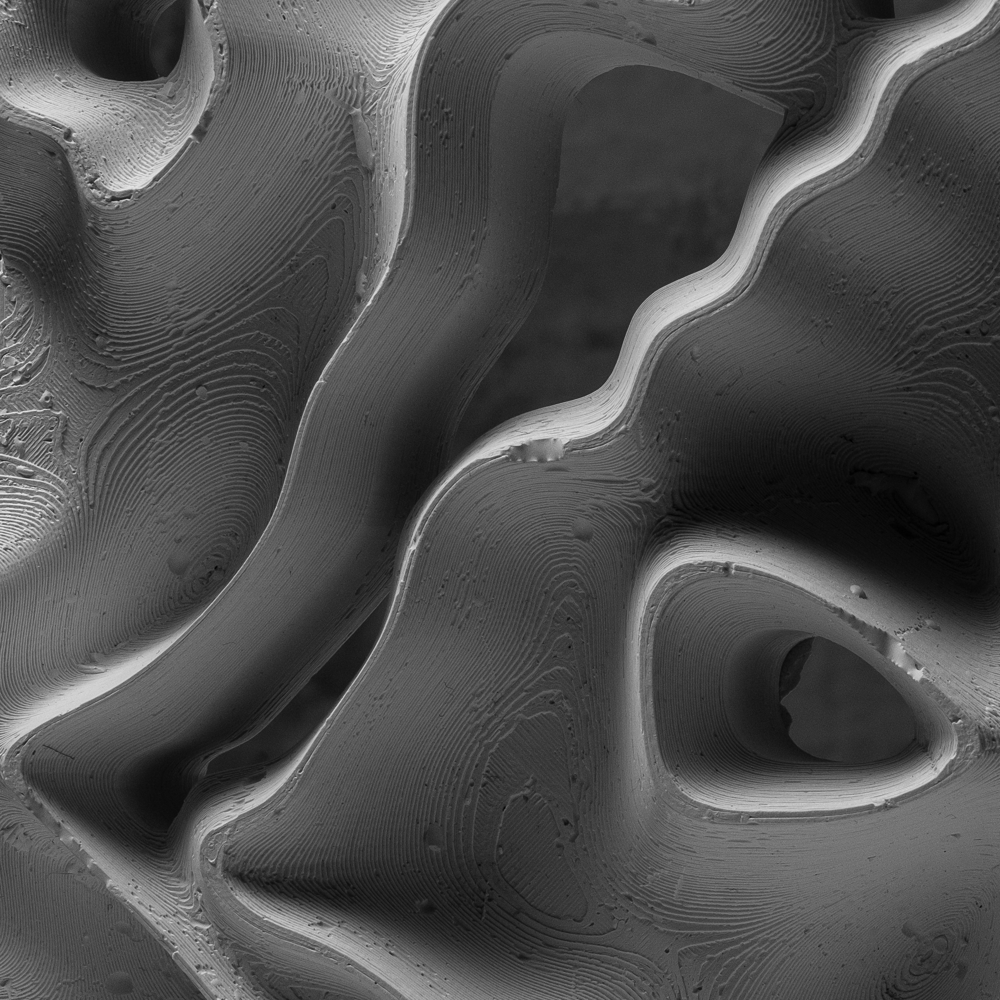

about // cv // contact
(1) (2) (3) (4) (5)
Cooking without recipes, constructs of solids out of data. Whether coding or making, seek to unlock and let lose a hint of the the undiscovered, finding genes&codes for their adaptability, mutation and seek of survival.
At the heart of my practice is a commitment to stretch the bounds of experimentation and to fabricate purposeful trial and error. Not afraid of failure and embrace the unfamiliar.


Cooking without recipes, constructs of solids out of data. Whether coding or making, seek to unlock and let lose a hint of the the undiscovered, finding genes&codes for their adaptability, mutation and seek of survival.
At the heart of my practice is a commitment to stretch the bounds of experimentation and to fabricate purposeful trial and error. Not afraid of failure and embrace the unfamiliar.